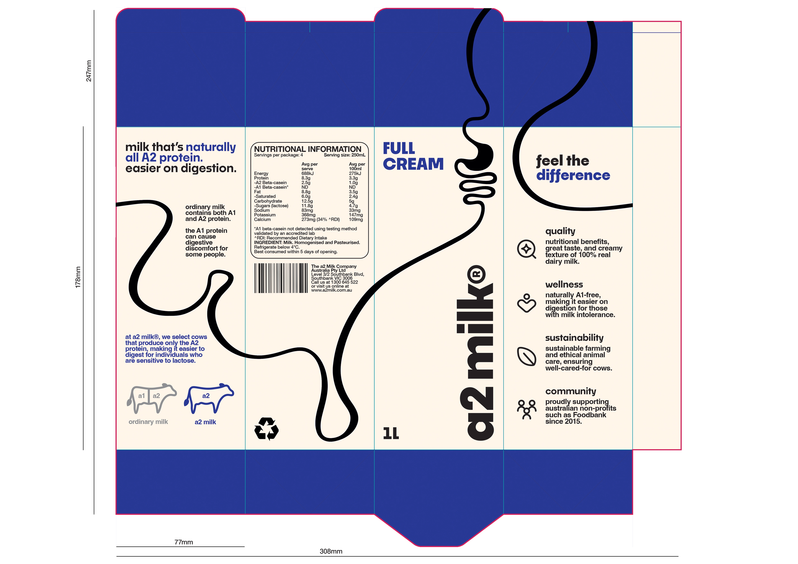
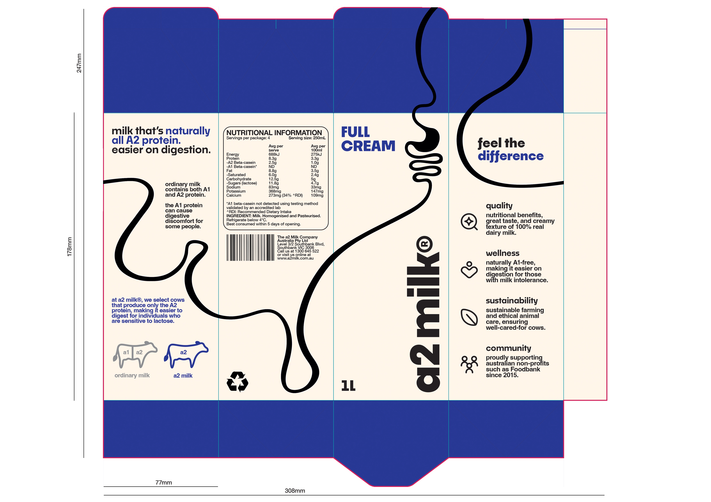

Phoebe Li Portfolio
Application for MC250
Master of Communication Design
Semester 2, 2025
A2 MILK
Next: Heaven or Las Vegas
Previous: Kusama
Visual identity
Concept for a refined A2 Milk® brand identity, moving away from a generic design towards a better reflection of the brand's passion and belief in their unique selling point. A minimal wordmark logo highlights a product of quality and regard, encouraging brand recognition. A colour palette of vibrant and rich tones convey authenticity and wellness, whilst also aligning with industry standards. A bold yet playful primary typeface, paired with a focused secondary typeface, together strike a balance between passion and quality. A clean and minimal illustration style enhances shelf presence, with the gut visual clearly and efficiently portraying their individual ‘easier on digestion’ benefit.


 
